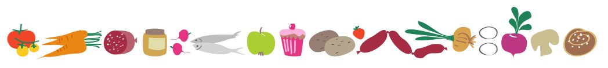

Om du vill veta vad som händer i Övraryd så registrera dig för att få nyhetsbrevet här.
Då kommer du bland annat att få reda på när det närmar sig slakt så att du kan lägga en beställning.
Jag vill anmäla mig!
Nu drar det ihop sig till årets slakt av lamm samt en rödkulla. Närmare information kring detta kommer i nästa vecka. Här vill vi informera om att vi på grund av ökade kostnader och även i viss mån en anpassning till jämförbara producenters priser behöver höja priset för våra köttlådor till 115:- per kilo. Samma pris gäller för både lamm och nöt.
Höjningen är ganska stor men priset är ändå lågt i förhållande till andra producenter med lantrasdjur och ekologisk produktion. Titta gärna in på vår sida där vi gör reklam för våra lantraser och med länkar till två företag med samma inriktning som vi.
Vänliga hälsningar från Övraryds gård
Hej Så är våren åter passerad och vi är på väg in i sommarens arbete. Vi hade ju tidigare aviserat att vi skulle slakta ett ungdjur som planerat i maj. Det blev litet fördröjt då han inte var riktigt slaktmogen då. Slakt sker nu istället i juni. Efter hängmörning sker styckningen den 26 juni. För er som inte bokat någon del i förväg är det så att det finns inga andelar kvar på detta djur, då alla tingats i förväg.
Nästa slakt blir någon gång i slutat av november och troligen finns endast ett djur som är färdigt för slakt även då. Vill ni då vara med och dela så är det viktigt att boka i tid, gärna i förväg. Som ni vet har vi ju ekologisk produktion av den svensk lantrasen Rödkulla och köttet hängmöras före styckningen. Varje del väger som vanligt ca 30 kg och vi står fast vid vårt låga pris även i år, dvs 95 kr/kg i lådan. Övraryd 20150610
Nu är planeringen för höstens slakt av lamm klar. I år något senare då det var stor belastning på slakteriet som slaktar åt oss. I höst har vi inga slaktmogna rödkullor, så ni som vill ha vår hängmörade rödkulla får vänta till maj 2015.
Lammlåda Lammen av våra ekologiska ryafår slaktas i två omgångar som vi gjort de senaste åren. Först alla bagglamm och sen alla tacklamm. Beställda bagglamm kan hämtas lördagen den 6 december kl. 10 - 12 på gården eller dagen efter. Ring gärna innan. Den 7 december kör vi väg 23 ned till Lund och lämnar till våra kunder där. Då kan vi också lämna lamm på avtalade mötesplatser längs med vägen.
Tacklamm kan på motsvarande sätt hämtas hemma fredagen 12 december efter kl. 15 eller dagen efter. Ring gärna innan. Ingen utkörning denna gång.
Lammen levereras som vanligt färdigstyckade i papplådor, med ett lamm i varje. Bara att stoppa i plastpåsar och frysa in. För att underlätta för våra kunder och slakteriet som styckar, har vi bestämt en grundstyckning som görs om inget annat anges. Några möjligheter till alternativ finns, som då anges inom parentes: lår som delade stekar med ben (alternativ hela fioler), bog som hela stekar, sadel skivad som fjärilskotletter (alternativ lång sadel), rygg skivad, hals skivad, slag hela och lägg delade. Även andra alternativ är naturligtvis också möjliga. Vikterna varierar litet men ligger vanligen i intervallet 14 – 18 kg. Tycker du det är för mycket så dela med någon. Priset är 85 kr per kg.
Välkomna med era beställningar via e-post till ingvarnilsson45@gmail.com eller telefon 070-250 27 54. En del av er som får detta har redan beställt lamm, men kanske inte angivet hur ni vill ha det styckat. Som vanligt begränsad mängd så först till kvarn gäller. Det är viktigt att ni anger om ni vill hämta hos oss eller med leverans enligt ovan. Ange också ett telefonnummer vi kan nå er på vid behov. Varje beställning bekräftas så ni vet om ni får köttlåda eller inte. Har du några frågor kring våra köttlådor eller annat så tag kontakt.
Ny information om köttlådor, lammlådor och betalinformation.
Hej alla gamla och nya kunder.
Planeringen för vårens slakt av rödkulleungdjur är klar. För att få
ihop tiderna med slakt, hängmörning och styckning blir det hämtning av
färdiga köttlådor hemma på gården fredagen den 30 maj (eftermiddag -
kväll). Jag planerar att som vanligt köra ned till Lund med leveranser
till kunder utefter vägen lördagen 31 maj. Pris som tidigare 95:- per
kilo i lådan. Innehåller som vanligt delar från hela djuret och litet
köttfärs. Även vikten på lådan som tidigare kring 30 kg. Skall denna
gång se om man kan stycka i något större delar och även att mera blir
till köttfärs. Detta efter kundönskemål.
Som information vill jag också meddela att vi sannolikt inte har några rödkullor till slakt till hösten utan nästa slakt sker först 2015. Passa därför på nu om ni vill säkra ert behov.
Har ni frågor eller andra synpunkter så hör av er till Ingvar på e-post ingvarnilsson45 at gmail . com eller telefon 070-250 27 54. Skicka också era beställningar till denna e-postadress helst senast 17 maj för att försäkra er om en låda. Därefter kan vi troligen inte lova er någon låda då beställningarna avgör antalet djur vi skickar till slakt på detta sätt. Ni har nu möjlighet att betala med fler sorters kort i vår kortläsare från iZettle (VISA, MasterCard, Maestro, American Express, JCB) eller som tidigare kontant.
Välkomna
Siv och Ingvar Nilsson
Övraryds Gård
Hej Vi slaktade alla våra vårfödda lamm i slutet av november 2013. Vi hade då några över som inte var beställda. Vi vakuumpackade då stekarna och bogarna och frös in dem. Vacuumpackning ökar hållbarheten flera gånger. Dessa kan vi nu sälja om någon vill ha fina stekar till påsk.
Vi har också två sommarfödda lamm som vi inte skall spara. Dessa kan också beställas. Förslagsvis med hela stekar och resten skivat inför grillsäsongen. Eftersom vi endast har detta lilla är det hämtning på gården efter överenskommelse som gäller. Vi är i huvudsak tillgängliga hela kommande vecka och under påskhelgen. E-posta din beställning och önskemål om hämtningstillfälle. Du får svar omgående ifall vi har det du önskar. Först till kvarn gäller.
Följande finns alltså:
Nu är planeringen för höstens slakt av lamm och nöt klar.
Lammen av våra ryafår slaktas i två omgångar som vi gjort de senaste åren. Beställda bagglamm kan hämtas fredagen den 15 november efter kl. 15 på gården eller dagen efter. Den 16 november kör vi väg 23 ned till Lund och lämnar till våra kunder där. Då kan vi också lämna lamm på avtalade mötesplatser längs med vägen. Tacklamm kan på motsvarande sätt hämtas hemma fredagen 22 november efter kl. 15 eller dagen efter. Den 23 november kör vi till Lund och kan lämna längs med vägen som ovan. Lammen levereras som vanligt färdigstyckade i papplådor, med ett lamm i varje. För att underlätta för våra kunder och slakteriet som styckar, har vi bestämt en grundstyckning som alla får. Några möjligheter till alternativ finns, som då anges inom parentes: lår som delade stekar med ben (alternativ hela fioler), bog som hela stekar, sadel skivad som fjärilskotletter (alternativ lång sadel), rygg skivad, hals skivad, slag hela och lägg delade. Anges inget annat blir de styckade enligt denna standard. Vikterna varierar litet men ligger vanligen i intervallet 14 – 18 kg. Tycker du det är för mycket så dela med någon. Priset är även i år 75 kr per kg.
Slaktmogna ungdjur av våra rödkullor hängmöras som vanligt 10 – 16 dagar, innan de styckas, delas i likvärdiga delar och packas i papplådor. Varje del innehåller styckningsdetaljer från hela djuret samt litet köttfärs. Se mera info om detta på hemsidan www.ovrarydsgard.se under produkter eller ring och fråga. Varje del väger cirka 30 kg. Tycker du detta är för mycket så dela med någon. Beställda köttlådor kan hämtas hemma på gården fredagen 6 december efter kl. 15. Den 8 december kör vi väg 23 ned till Lund och lämnar till våra kunder där. Då kan vi också lämna lådor på avtalade mötesplatser längs med vägen. Priset är även i år 95 kr per kg. Välkomna med era beställningar via e-post till ingvarnilsson45 @ gmail . com eller telefon 070-250 27 54. Som vanligt begränsad mängd så först till kvarn gäller. Det är viktigt att ni anger om ni vill hämta hos oss eller med leverans enligt ovan. Ange också ett telefonnummer vi kan nå er på vid behov. Varje beställning bekräftas så ni vet om ni får köttlåda eller inte. Har du några frågor kring våra köttlådor eller annat så tag kontakt.

Övraryds Gård medverkar i oktober på två arrangemang av Lokala Skafferiet: